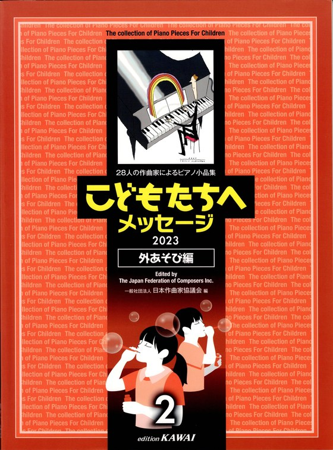
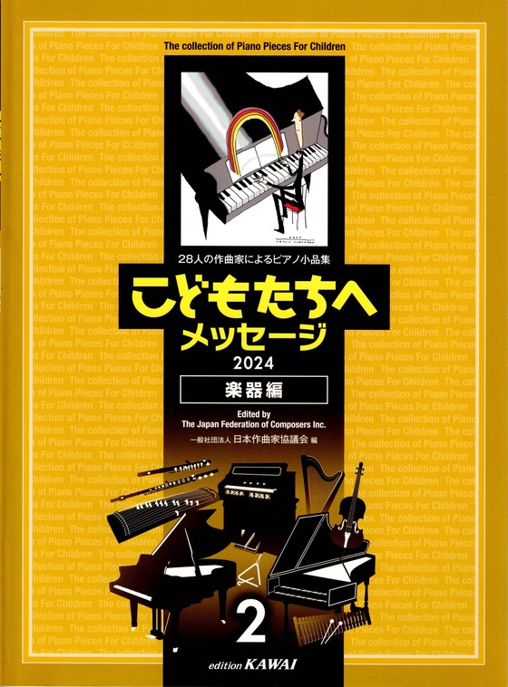
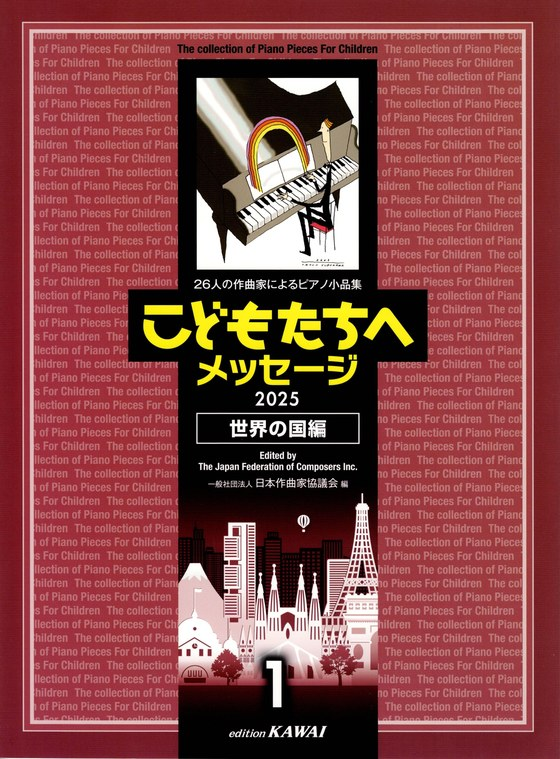

十五年のミュージカル指導と、
三年連続でカワイ出版に採用された作曲経験を活かし、
お子さんに、園に、教室に、特別な一曲をお届けします。
子どもが歌う歌は、子ども扱いしない歌でなければなりません。 やさしくて、覚えやすくて、けれど、安易ではないこと。 メロディに芯があり、歌詞の世界を子どもの心が受け止められること。
私は四人の子どもを育てながら童謡やミュージカルを書き続け、 その後ミュージカルキッズKOBATOを主宰して十五年。 この長い時間のなかで、「子どもが本当に歌いたくなる歌」と 「大人が子どもに歌わせたい歌」の境界を、いつも考えてきました。
歌は、子どもに渡される最初の文化のひとつです。 その歌が、その子の人生のどこかでふと甦り、心の支えになる。 ──そんな歌を、これからも書き続けたいと願っています。
毎年カワイ出版から刊行される
「こどもたちへメッセージ」（日本作曲家協議会 編）。
日本を代表する作曲家陣による、子どものためのピアノ小品集です。



三年連続、出品作品はすべて採用されています。
自ら子どもたちに音楽を教え、舞台に立たせ、
その目線で曲を書き続けてきた十五年。
机上の作曲ではなく、
子どもの呼吸と歩幅を知る作曲家として、
ご依頼にお応えします。
園歌、記念曲、発表会曲。
まずは無料でご相談ください。